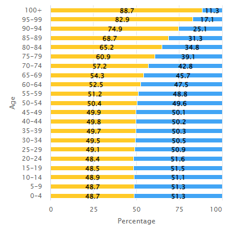

HISTORY
- 1542 - Spanish expedition claims the islands and names them the Philippines after the heir to the Spanish throne
- 1896 - Civil and armed campaign for independence from Spanish rule begins.
- 1898 - Revolutionary forces under Emilio Aguinaldo proclaim independence.
- 1898 December - During brief Spanish-American War, US Navy destroys Spanish fleet in Manila Bay. Spain cedes Philippines to US, which proclaims military rule.
- 1899 - Revolutionaries refuse to recognise US takeover, proclaim First Philippine Republic with General Aguinaldo as president, launch armed struggle against US forces known as Philippine-American War.
- 1901 - Emilio Aguinaldo captured.
- 1902 - Philippine-American War formally ends as US civil government replaces military rule. Some independence forces fight on until defeat of Moro resistance in south in 1913.
- 1907 - Elected Philippine assembly inaugurated under US rule. 1916 - US government promises Philippines greater autonomy, leading to independence.
- 1935 - A plebiscite approves establishment of Commonwealth of Philippines. Manuel Quezon is its first president. Philippines promised full independence within 10 years.
- 1941 - Japan seizes Philippines.
- 1944 - US forces retake islands.
- 1946 - Islands granted full independence and renamed Republic of the Philippines.
- 1947 - The US is awarded military bases on the islands.
- 1951 - Peace treaty signed with Japan. The Philippines eventually receive $800m in reparations payments.
- 1965 - Ferdinand Marcos becomes president.
- 1969 - Marcos re-elected amidst allegations of electoral fraud. Supports US policy in Vietnam. Muslim separatists in south begin guerrilla war.
- 1972 - Marcos declares martial law. Parliament suspended, opposition politicians arrested, censorship imposed.
- 1973 - New constitution gives Marcos absolute powers.
- 1977 - Opposition leader Benigno Aquino sentenced to death, but Marcos delays execution.
- 1980 - Aquino allowed to travel to US for medical treatment.
- 1981 - Martial law lifted. Marcos wins presidential elections.
- 1983 - Aquino returns to Philippines, but is shot dead as he leaves plane amid suspicions of official military involvement.
- 1986 - Presidential elections see Marcos opposed by Aquino's widow Corazon. Marcos declares himself the winner, but Aquino disputes result. Mass protests, dubbed "people power", in Manila see military abandon Marcos, who flees to Hawaii. New government says Marcos looted billions of dollars during his rule.
- 1989 December - US jets assist Philippine government forces suppress attempted coup.
- 1990 - Military officials convicted of murder of Benigno Aquino.
- 1991 - US abandons Clark Air Base after volcanic eruption smothers it with ash.
- 1992 - Aquino's defence minister Fidel Ramos wins presidency. US closes Subic Bay Naval Station.
- 1998 - Former film star Joseph Estrada elected president.
- 2000 November - Impeachment proceedings start against President Estrada on allegations of corruption, betrayal of public trust, and violation of the constitution.
- 2001 January - Suspension of impeachment causes mass street protests. Military withdraws support and President Estrada stands down. Vice-President Gloria Arroyo sworn in as president.
- 2001 March - MILF declares ceasefire, says ready to hold talks with government.
- 2001 April - Joseph Estrada is charged with plundering more than $80m from state funds
- 2005 June - Influential Cardinal Jaime Sin, who led the two peaceful revolts that toppled Presidents Marcos and Estrada, dies aged 76.
- 2010 June - Benigno "Noynoy" Aquino becomes president.
- 2012 May - Philippines and Chinese naval vessels confront one another off the Scarborough Shoal reef in the South China Sea. Both countries claim the reef, which may have significant reserves of oil and gas.
- 2016 June - Populist former mayor Rodrigo Duterte elected president, announces hard-line crackdown on drugs and suggests he might pivot from the US to China.
- 2020 - Starting March 10, the many parts of the country, specially the National Capital Region, has been under various levels of lockdown due to the Corona virus (COVID-19) that started in Wuhan, China and has spread worldwide. Turning the economy from the fastest growing in Asia into a recession.
- 2022 - Ferdinand Marcos Jr. was sworn in as president and Sara Duterte-Carpio as vice-president of the Republic.
GEOGRAPHY AND ENVIRONMENT
There are 7,107 distinct islands in the Philippines (7,106 at high tide), yet only 880 of them are inhabited. The large island of Luzon in the north, which includes Manila, the large island of Mindanao in the south, and the collection of islands known as the Visayas that lie between them make up the three main geographical regions in the Philippines. These three areas are represented by the three stars on the Philippine flag.
The 7,107 islands that make up the Philippine archipelago are ideally situated near many of Southeast Asia's major waterways, including the South China Sea, Philippine Sea, Sulu Sea, Celebes Sea, and Luzon Strait.
The 21,000 miles of natural shoreline on the Philippines' island terrain. There are numerous natural harbors and lovely bays scattered along the region's mountainous and irregular coastline. The South Pacific's most breathtaking beaches can be found in the Philippines. They are well-liked by tourists from all over the world because they are locations that would live up to anyone's vision of a pristine South Pacific paradise with white sand beaches and crystal blue oceans. Unfortunately, the metro Manila area is unsuitable for relaxing Sundays at the beach due to the dense pollution and rugged coastline of Manila Bay.
The majority of the country's interior is mountainous, with a number of peaks over 10,000 feet. The Philippines also features vast fertile plains in the country's midsection and along its coast. It also has beautiful, rolling hills with verdant valleys and rivers that cut through them. In the nation, there are many volcanoes, some of which are frequently active. The greatest volcanic explosion of the century, Mt. Pinatubo's eruption on June 12, 1991, is the most recent and well-known example. Northern Luzon's topography was irreversibly changed by the Mt. Pinatubo eruption, which also causes ongoing issues with flood control.
There are still just roughly 5 million hectares of woods, or less than 18% of the total land area. Of this forest, only 800,000 hectares are regarded as old growth forest. For millions of Filipinos, these natural resources serve as the foundation for both work and food security.
CLIMATE:
The Philippines has a tropical climate, yet for the majority of the year it is only somewhat less hot and humid than many tropical nations. Even though the sun is out for virtually the entire year, there are small seasonal differences in the weather. The dry summer, which lasts from roughly late April to early June, is hot, muggy, and has minimal precipitation. The typhoon season lasts from June to September, and it is marked by regular downpours that both prevent outdoor activities and moderate the heat. Although the downpours are frequently brief in duration, the ensuing flash floods can cause havoc by closing streets, trapping drivers, and bringing Manila's already backed-up traffic to a virtual standstill. The period from November to March that follows the wet season is the most pleasant. Mornings can be cool during this time of year, and even midday temperatures are tolerable thanks to frequent breezes that reduce the heat.
Manila's temperature range is quite small, with lows in the mid-70s, highs in the mid-90s, and an average annual temperature of roughly 80°F. In April, the average relative humidity is 69%, while in August or September, it is 84%
TERRAIN:
primarily mountains, with little to large coastal lowlands
NATURAL HAZARDS:
astride typhoon belt, often impacted by 15 and hit by 5–6 cyclonic storms per year; landslides; active volcanoes; devastating earthquakes; tsunamis
ENVIRONMENTAL ISSUES:
Unchecked deforestation, particularly in watershed regions; soil erosion; air and water pollution in large cities; deterioration of coral reefs; and rising pollution of coastal mangrove swamps, which are crucial fish breeding grounds.
GEOGRAPHIC COORDINATES:
13 00 N, 122 00 E
TIME ZONE:
UTC+8 (13 hours ahead of Washington, DC, during Standard Time)
DEMOGRAPHY
Percentage of male and female population by age, 2022

CULTURE
The traditional Filipino and Spanish Catholic traditions are mixed with elements from other parts of Asia and America to create the culture of the Philippines. Filipinos value their families, are frequently religious, and enjoy art, fashion, music, and food.
Filipinos enjoy having a good time and are friendly people. Together, people will frequently sing, dance, and eat. The annual calendar is jam-packed with celebrations, many of which incorporate pre-Christian nationalism's attire and rituals with modern Catholicism.
Daily life and social customs
The extended family in the Philippines, which consists of parents, grandparents, aunts, uncles, cousins (who may be several times removed), and other relatives, typically dominates daily life. A significant part of the kinship network for Catholic families also includes godparents, who are entrusted with the responsibility of raising the children in the event that the parents pass away or become incapable. For significant life occasions like weddings, circumcisions (for Muslim Filipinos), baptisms, and confirmations, as well as for significant religious and other national holidays, extended families frequently get together. Christmas, Easter, and Eid al-Fitr, which celebrates the end of Ramadan for Muslims who fast during that month, are among the religious holidays that are recognized as such in the Philippines. New Year's Day and Labor Day are two more significant holidays. New Year's Day, Labor Day (May 1), and Independence Day are additional significant holidays.
Major meals in most Filipino civilizations are centered upon boiled or steamed rice or rice noodles, whether they are festival cuisine or ordinary food. Along with a variety of fruits and cooked vegetables, small amounts of meat, such as chicken, pork (in non-Muslim populations), goat, or fish, complement the rice or noodle core. Rice, sugarcane, and coconut sap are used to create a variety of alcoholic beverages. A common street snack in the Manila area is balut, which is a parboiled embryonic duck that is still in the egg.
While European-inspired slacks, shirts, skirts, and dresses are widely worn throughout the Philippines, some outfits are specific to certain ethnic groups or geographical areas. Muslim populations in Mindanao are known for wearing the malong, a vibrantly woven tube of cloth that can be worn in a variety of ways by both men and women. Many men in metropolitan regions dress formally and casually in the barong, a shirt with beautiful embroidery. Urban women can wear the terno, a long dress with broad "butterfly" sleeves that rise slightly at the shoulders and extend to the elbow, on special occasions. Numerous smaller ethnic groups have distinctive clothing for occasions with specific cultural importance.
The Arts
According to early Spanish chroniclers, the Filipinos created wooden representations of their anitos (gods and goddesses) and ancestors. They also played a variety of musical instruments, including as gongs, drums, lutes, nose and end-blown flutes, and jew's harps. Certain instrumental music, songs, and dances were required for various life rituals, such as courtship and marriage, as well as seasonal celebrations (such as harvest). For instance, the kulintang ensemble, which consists of a set of gongs suspended horizontally and vertically and a single-headed drum, can still be heard at festive events in some Muslim communities of Mindanao and the Sulu Archipelago.
[Music] Numerous Filipino performers have achieved success in the Western classical music tradition, notably opera vocalist Jovita Fuentes, composer and conductor Antonio J. Molina, and composer Felipe P. de Leon (renowned for his nationalistic themes). The performing arts are housed at the Cultural Center of the Philippines, the Folk Arts Theater, and the renovated Manila Metropolitan Theatre (all in Manila), which present both domestic and international opera and ballet. The Philippine High School for the Arts is part of the National Arts Center, which was created in 1976 and is run by the government to support the growth of the arts in Los Baños, a province south of Manila.
[Visual Arts] Juan Luna, whose agitated paintings contributed to the rise of Filipino nationalism in the late 19th century; Fernando Amorsolo, known for his traditional rural scenes; Carlos V. Francisco and Vicente Manansala, muralists; Victorio Edades and Arturo Rogerio Luz, modernists; and others are among the Filipino painters. Guillermo Tolentino and Napoleon Abueva are well-known sculptors. Wood carvings are popular among rural artists from northern Luzon's hilly regions, as well as artisans from Paete, which is located on the eastern bank of Laguna de Bay and northwest of Manila. Marble statues can be seen on Romblon and other surrounding islands. Juan F. Nakpil, Otilio Arellano, Fernando Ocampo, Leandro Locsin, Juan Arellano, Carlos Arguelles, and Tomas Mapua are notable Filipino architects.
[Literature] The controversial political novels of nationalist hero José Rizal were Philippine literary monuments of the late 19th century, and since the middle of the 20th century, Nick Joaquin's writing has been among the most highly regarded in the country. The rich cultural diversity of the nation not only inspires much of Joaquin's fiction writing, but also serves as the foundation for much of his nonfiction. His drama A Portrait of an Artist as a Filipino (1966) and biography of killed presidential candidate Benigno Aquino, The Aquinos of Tarlac: An Essay on History as Three Generations, are two of Joaquin's most well-known creations (1983). Prior to the American occupation, Spanish was the primary literary language; however, around the turn of the 20th century, English took its place.
[Myths / Legends] Filipino culture is steeped in local and regional mythology. The origin of the world, the first man and woman on earth, why the sky is high, why the sea is salty, and why there are various races are all topics that are covered in myths and legends. There are other legends connected to the Spanish conquest. The Ilocano epic Biag ni Lam-ang ("Life of Lam-ang") describes the adventures of a traditional folk hero in northern Luzon, whereas on the island of Mindanao, the Darangen ("To Narrate in Song") shows the historical and mythological universe of the Maranao society.
[Sports] In the Philippines, a variety of sports that Americans brought in the early 20th century are very well-liked. Particularly popular is basketball, with neighborhood competitions occurring often around the nation. In addition, the Philippines entered strong national teams at the World Basketball Championships.
Boxing, wushu, and tae kwon do are just a few of the martial arts that Filipinos have excelled at while competing globally. Local Filipino martial arts traditions have also seen a rebirth since the turn of the 20th century. The Philippines has produced champion boxers who have competed in World Boxing Association events, and the nation has won numerous medals in martial arts disciplines at Asian and Southeast Asian Games.
In the Philippines, cockfighting (sabong), a long-standing pastime, continues to have a fervent following. It is a well-liked form of gambling, and lots of spectators place bets based on how the fights turn out. Cockfighting is prevalent all over the nation, but it is most closely related to Cebu.